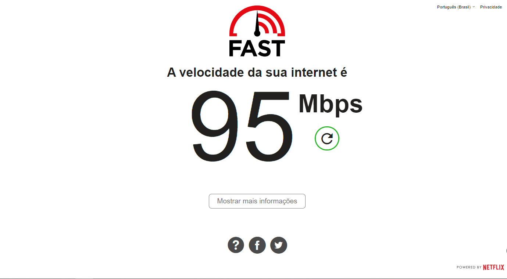
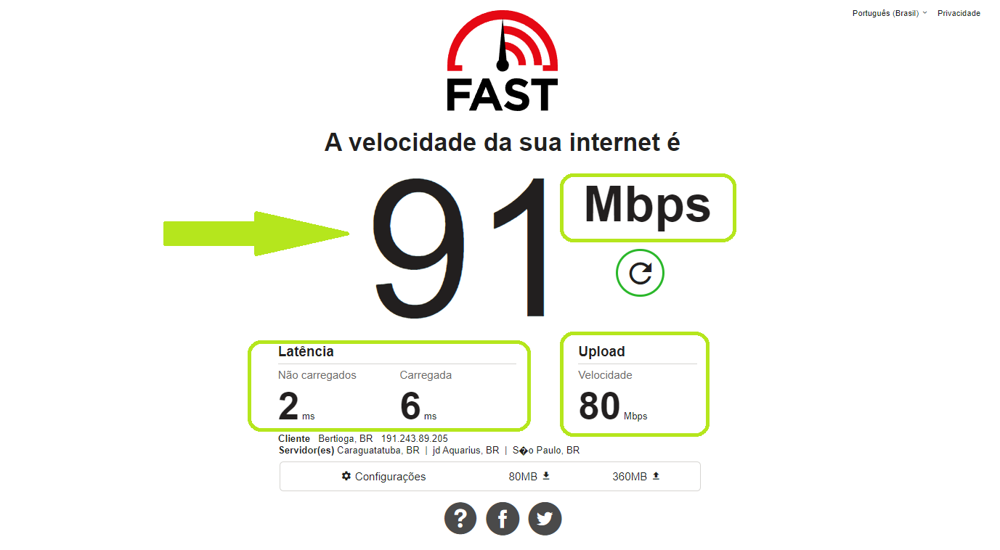

Passo 1
Acesse clicando no botão "Fast.com" no final da pagina


Passo 2
A medição da taxa de download começará automaticamente;

Passo 3
Clique em “Mostrar mais informações” e aguarde o final de todos os testes.